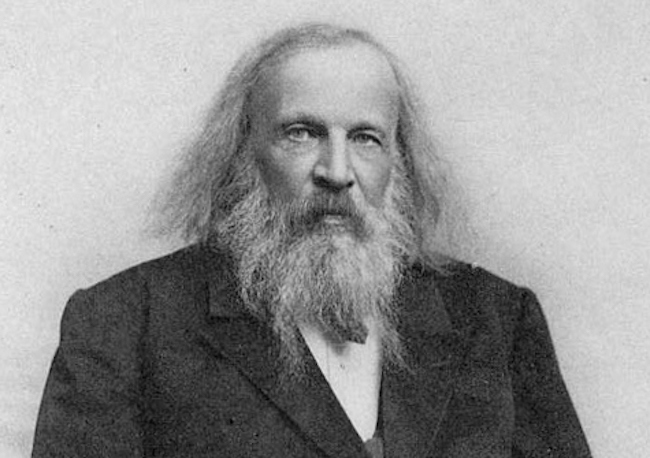

One man and three numbers.한 사람과 세 개의 숫자
./images/mendeleev.jpg

The first periodic table최초의 주기율표
He lined up the 63 elements known then, and left empty boxes for elements not yet found.당시 알려진 63개 원소를 줄 세우고, 아직 발견되지 않은 원소의 자리를 비워 두었습니다.
Where stars stop별이 멈추는 곳
Stars build elements by fusion, but only up to iron. Heavier elements need exploding stars.별은 핵융합으로 원소를 만들지만 철까지입니다. 더 무거운 원소는 별의 폭발이 필요합니다.
The heaviest in nature자연에서 가장 무거운 원소
The heaviest element found in nature in real amounts.자연에서 의미 있는 양으로 발견되는 가장 무거운 원소입니다.
All we know today지금까지 알려진 전부
Elements beyond uranium were made in laboratories. 118 in total so far.우라늄 너머의 원소는 실험실에서 만들었습니다. 지금까지 모두 118개.
The periodic table: outer electrons by column.주기율표: 열마다 바깥 전자 수가 같습니다
Eight is the magic number.8이 마법의 숫자입니다
The Octet Rule8의 규칙 (Octet Rule)
Full: 8 outside가득 참: 바깥에 8개
A noble gas. Its outer shell is already full, so it hardly reacts with anything.비활성 기체. 바깥 껍질이 이미 가득 차 있어 거의 반응하지 않습니다.
One too many하나가 남음
It gives away its lonely outer electron and becomes Na⁺, with a full shell like neon.바깥의 외로운 전자 하나를 내주고 Na⁺가 되어, 네온처럼 껍질이 가득 찹니다.
One too few하나가 모자람
It takes one electron and becomes Cl⁻. Na⁺ and Cl⁻ together: table salt.전자 하나를 받아 Cl⁻가 됩니다. Na⁺와 Cl⁻가 만나면 소금입니다.
Count the outer electrons.바깥 전자를 세어 보세요
One electron without a partner.짝 없는 전자 하나
Radicals라디칼 (Radical)
All electrons paired모든 전자가 짝을 이룸
Every electron has a partner. Calm and stable: you drink it.모든 전자에 짝이 있습니다. 차분하고 안정해서 마실 수 있습니다.
One extra electron전자 하나가 더 있음
Still all paired, but it carries a charge. Found in soap and in any alkaline water.여전히 모두 짝이 있지만 전하를 띱니다. 비누나 알칼리성 물속에 있습니다.
One electron alone짝 없는 전자 하나
Neutral, but one electron has no partner. It grabs one from almost anything in about a billionth of a second.전하는 없지만 전자 하나에 짝이 없습니다. 10억분의 1초 만에 주변 무엇에서든 전자를 빼앗습니다.
OH•: the radical inside you.OH•: 내 몸속의 라디칼
Hydroxyl Radical and LifeOH 라디칼과 생명 (Hydroxyl Radical & Life)
Radicals do the real work.실제 일은 라디칼이 합니다
Radicals in the Fab and in Industry반도체와 산업 속 라디칼 (Radicals in the Fab & Industry)
Carve the pattern패턴을 깎습니다
F• turns solid silicon into a gas that is simply pumped away.F•가 고체 실리콘을 기체로 바꾸고, 기체는 펌핑하여 배기됩니다.
Grow thin films얇은 막을 증착합니다
Radicals build films at about 300–400 °C instead of the 600 °C+ that heat alone would need.라디칼 덕분에 열만으로는 600 °C 이상이 필요한 막을 약 300~400 °C에서 쌓습니다.
Burn off photoresist감광막을 태웁니다
Oxygen radicals remove the used photoresist without touching the wafer much.산소 라디칼이 다 쓴 감광막을 웨이퍼 손상 없이 제거합니다.
Clean the ChamberChamber를 청소합니다
A remote plasma makes F• that strips deposits off the Chamber walls between wafers.원격 플라즈마가 만든 F•가 Chamber 벽에 쌓인 막을 걷어 냅니다.
Five ways matter holds together.물질을 붙잡는 다섯 가지 힘
Chemical Bonds & Intermolecular Forces화학 결합과 분자 사이의 힘 (Chemical Bonds & Intermolecular Forces)
Sharing electron pairs전자쌍을 함께 쓰기
Two nonmetal atoms each put electrons into the space between them. The shared pair counts toward both octets, and both nuclei are pulled toward it.두 비금속 원자가 각각 전자를 내놓아 사이 공간에 둡니다. 공유한 전자쌍은 양쪽 옥텟에 모두 세어지고, 두 원자핵이 그 전자쌍 쪽으로 끌려 붙습니다.
One pair is a single bond, two a double, three a triple. More pairs, shorter and stronger: N₂'s triple bond needs almost 10 eV. When the two atoms pull unequally (HF), the bond is polar: δ+ on one side, δ− on the other.한 쌍이면 단일 결합, 두 쌍이면 이중, 세 쌍이면 삼중 결합입니다. 쌍이 많을수록 짧고 강합니다. N₂의 삼중 결합은 거의 10 eV가 필요합니다. 두 원자가 전자를 불공평하게 당기면(HF) 극성 결합이 되어 한쪽은 δ+, 다른 쪽은 δ−가 됩니다.
| H–H (single)H–H (단일) | 4.5 eV |
| O=O (double)O=O (이중) | 5.2 eV |
| N≡N (triple)N≡N (삼중) | 9.8 eV |
| H–F (polar)H–F (극성) | 5.9 eV |
| Si–Si in a crystal결정 속 Si–Si | 2.3 eV |
Giving and taking주고받기
A metal with one or two outer electrons gives them to a nonmetal that is one or two short. Both reach a full shell, but now one is + and the other −, and they hold each other by electric attraction.바깥 전자가 한두 개인 금속이, 한두 개가 모자란 비금속에게 전자를 넘깁니다. 둘 다 껍질이 가득 차지만 한쪽은 +, 다른 쪽은 −가 되어 전기적 인력으로 붙습니다.
Watch the sizes: Na⁺ shrinks after losing its outer shell, Cl⁻ swells after gaining one. Ions do not pair up alone: they stack into a crystal, which is why salts are hard, brittle and melt only at high temperature.크기를 보세요. Na⁺는 바깥 껍질을 잃어 작아지고, Cl⁻는 전자를 얻어 커집니다. 이온은 둘씩 짝만 짓지 않고 결정으로 쌓이므로, 소금은 단단하고 잘 깨지며 높은 온도에서만 녹습니다.
| NaCl lattice energyNaCl 격자 에너지 | 787 kJ/mol ≈ 8.2 eV |
| LiF lattice energyLiF 격자 에너지 | 1037 kJ/mol ≈ 10.7 eV |
| MgO (2 electrons)MgO (전자 2개) | 3791 kJ/mol ≈ 39 eV |
| NaCl melting pointNaCl 녹는점 | 801 °C |
A sea of electrons전자의 바다
Metal atoms let go of their outer electrons into a shared "sea". The positive cores sit in a regular lattice and the electrons move freely among all of them. The attraction between the cores and the sea is the bond.금속 원자는 바깥 전자를 공동의 "바다"로 내놓습니다. 양이온 핵은 규칙적으로 늘어서 있고, 전자는 그 사이를 자유롭게 돌아다닙니다. 핵과 전자 바다 사이의 인력이 결합입니다.
Because the electrons are free, a small voltage makes them drift: that is electric current. The same free electrons carry heat and reflect light (shine), and because no bond is tied to one direction, metals bend instead of breaking.전자가 자유로우므로 작은 전압만 걸어도 한쪽으로 흐릅니다. 이것이 전류입니다. 같은 자유 전자가 열을 전하고 빛을 반사(광택)하며, 결합에 정해진 방향이 없어 금속은 깨지지 않고 휘어집니다.
| Cu resistivityCu 비저항 | 1.7 µΩ·cm |
| Al resistivityAl 비저항 | 2.7 µΩ·cm |
| W resistivityW 비저항 | 5.6 µΩ·cm |
| W melting pointW 녹는점 | 3422 °C |
H pulled by O, N or FO·N·F가 H를 당김
In water, oxygen pulls the shared electrons toward itself, so each H is slightly positive (δ+) and the O slightly negative (δ−). The δ+ H of one molecule is attracted to the δ− O of a neighbor: a hydrogen bond (dashed line).물에서 산소는 공유 전자를 자기 쪽으로 당기므로 H는 약간 +(δ+), O는 약간 −(δ−)가 됩니다. 한 분자의 δ+ H가 이웃 분자의 δ− O에 끌리는 것이 수소 결합(점선)입니다.
It is about 20 times weaker than the O–H bond inside the molecule, but there are so many that water boils only at 100 °C. Raise the temperature: molecules move faster and the hydrogen bonds keep breaking. They also hold the two strands of DNA together.분자 안의 O–H 결합보다 약 20배 약하지만 수가 아주 많아서 물은 100 °C에서야 끓습니다. 온도를 올려 보세요. 분자가 빨라지며 수소 결합이 계속 끊어집니다. DNA의 두 가닥을 붙잡는 것도 수소 결합입니다.
| Hydrogen bond in water물의 수소 결합 | ≈ 0.2 eV |
| O–H bond inside H₂OH₂O 안의 O–H 결합 | ≈ 4.8 eV |
| Boiling point of water물의 끓는점 | 100 °C |
| H₂S (no H-bond) boils atH₂S (수소 결합 없음) 끓는점 | −60 °C |
A brief, weak pull순간적인 약한 인력
Even a perfectly balanced atom such as argon has an electron cloud that sloshes from side to side. For an instant one side is a little − and the other a little +. That momentary dipole nudges the cloud of a neighbor, and the two attract weakly.아르곤처럼 완벽하게 균형 잡힌 원자도 전자구름이 이리저리 출렁입니다. 순간적으로 한쪽은 약간 −, 반대쪽은 약간 +가 되고, 이 순간 쌍극자가 이웃 원자의 전자구름을 밀어 둘이 약하게 끌어당깁니다.
It acts between all molecules and is the weakest of the five, close to room-temperature thermal energy. That is why argon only becomes liquid at −186 °C. On a surface it makes gas molecules stick for a short time before they leave again (physisorption).이 힘은 모든 분자 사이에 작용하며 다섯 가지 중 가장 약해서 상온의 열에너지와 비슷합니다. 그래서 아르곤은 −186 °C에서야 액체가 됩니다. 표면에서는 가스 분자를 잠시 붙잡았다가 다시 떠나게 합니다(물리 흡착).
| Ar–Ar attractionAr–Ar 인력 | ≈ 0.01 eV |
| Thermal energy at 25 °C25 °C의 열에너지 | 0.026 eV |
| Argon boiling point아르곤 끓는점 | −186 °C |
| Gecko feet도마뱀붙이 발바닥 | van der Waals |
Each gas has its own job.가스마다 맡은 일이 다릅니다
Ar · He
No chemistry. They hit the surface like tiny bullets, or just carry the plasma.화학 반응이 없습니다. 작은 총알처럼 표면을 때리거나 플라즈마를 유지하는 역할을 합니다.
Halogen gases할로젠 가스
Fluorine or chlorine bites silicon and oxide into gases that can be pumped away.플루오린이나 염소가 실리콘과 산화막을 물어뜯어 펌프로 뽑아낼 수 있는 기체로 만듭니다.
Film and cleaning gases막 형성·세정 가스
SiH₄ builds silicon films, O₂ and N₂ build oxides and nitrides, NF₃ cleans the Chamber.SiH₄는 실리콘 막, O₂·N₂는 산화막·질화막을 만들고, NF₃는 Chamber를 세정합니다.
Which bonds can a plasma electron break?플라즈마 전자는 어떤 결합까지 끊을 수 있을까?
An electron hits a molecule, and it breaks.전자가 분자를 때리면 분자가 끊어집니다
Dissociation of Molecules분자의 해리 (Dissociation)
The electron is not used up. It can break many molecules.e⁻ + CF₄ → CF₃ + F + e⁻
전자는 소모되지 않고 수많은 분자를 계속 끊을 수 있습니다.